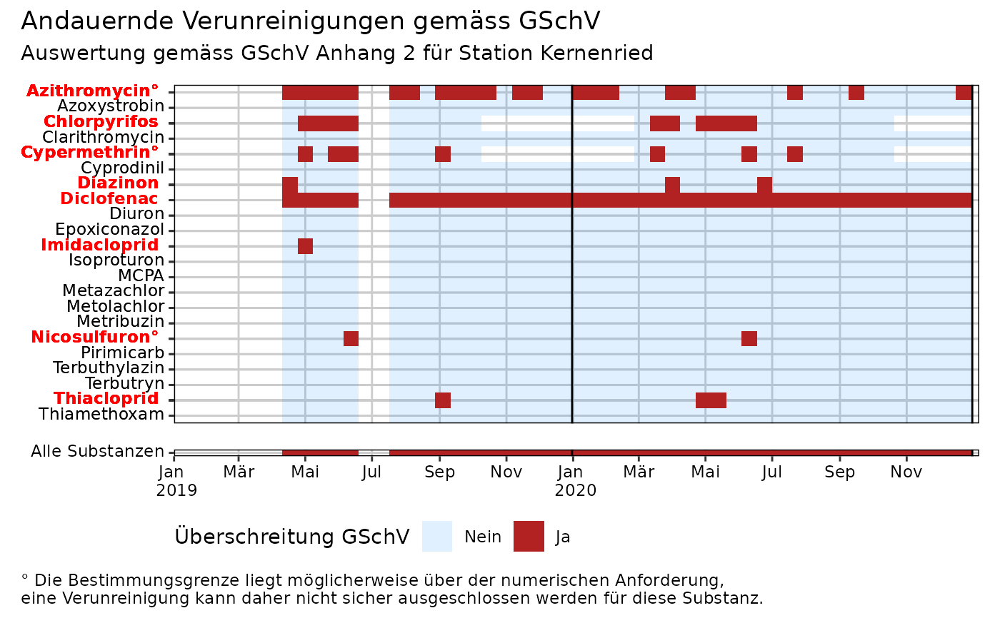
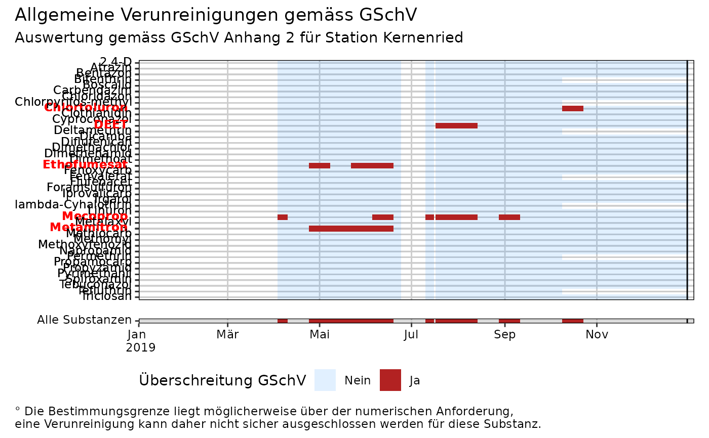

GSchV-Überschreitungen in Mischproben plotten
plot_misch_ue.RdPlottet Konzentrationsüberschreitungen von Stoffen, für die in der GSchV entweder ein ökotoxikologisch begründeter Wert vorliegt oder ein allgemeiner Grenzwert (0.1 µg/l).
Verwendung
plot_misch_ue(
rq_ue_daten,
stationscode,
jahr = NULL,
plot_typ = c("andauernd", "allgemein", "kurzzeitig")
)Argumente
- rq_ue_daten
Dataframe mit Output der Funktion
berechne_rq_ue()- stationscode
Station, für welche der Plot erstellt werden soll.
- jahr
Jahr, für welches der Überschreitungsplot erstellt werden soll.
- plot_typ
Legt fest, für welche Art von Überschreitungen eine Auswertung vorgenommen werden soll. Mögliche Werte:
"andauernd": Berücksichtigt nur Stoffe mit einem spezifischen andauernden Grenzwert in der GSchV. Nur Proben mit einer Dauer von >= 10 Tagen werden verwendet und unter Verwendung des CQK beurteilt."kurzzeitig": Berücksichtigt nur Stoffe mit einem spezifischen akuten Grenzwert in der GSchV. Berücksichtigt alle Proben (ausser Stichproben) und verwendet das AQK zur Beurteilung."allgemein": Berücksichtigt nur Stoffe, für die kein ökotoxikologisch begründeter Wert in der GSchV vorliegt. Beurteilung mittels allgemeinem Grenzwert (0.1 µg/l)
Beispiele
# Andauernde Überschreitungen (und Unterschreitungen) für die Jahre 2019 und 2020 plotten
plot_misch_ue(rq_ue_beispiel_mvwizr, "URT010", jahr = c(2019, 2020))
#> Warning: Removed 1 row containing missing values or values outside the scale range
#> (`geom_vline()`).
#> Warning: Removed 1 row containing missing values or values outside the scale range
#> (`geom_vline()`).

# Allgemeine Überschreitungen für 2019 anzeigen
plot_misch_ue(rq_ue_beispiel_mvwizr, "URT010", plot_typ = "allgemein", jahr = 2019)

# Kurzzeitige Überschreitungen für Station MUS001 für gesamte Zeitdauer in Daten anzeigen
plot_misch_ue(rq_ue_beispiel_mvwizr, "MUS001", plot_typ = "kurzzeitig")
#> Warning: Removed 1 row containing missing values or values outside the scale range
#> (`geom_vline()`).
#> Warning: Removed 1 row containing missing values or values outside the scale range
#> (`geom_vline()`).